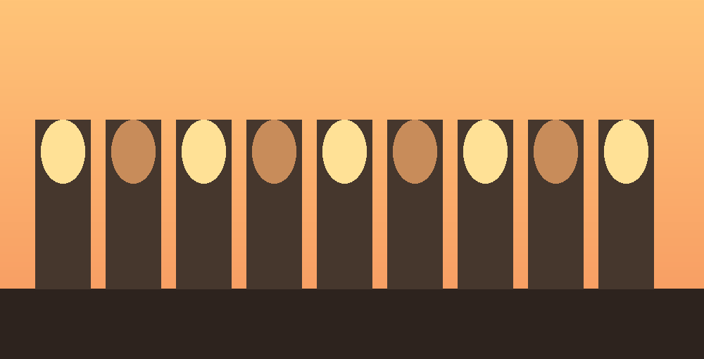
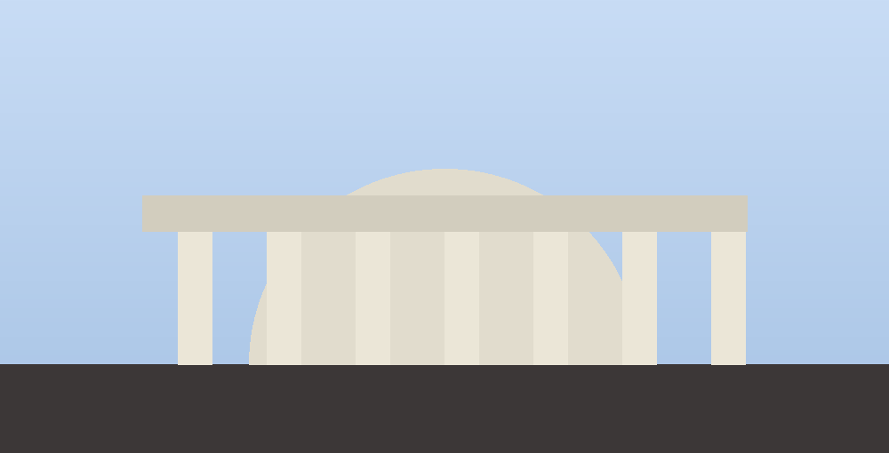
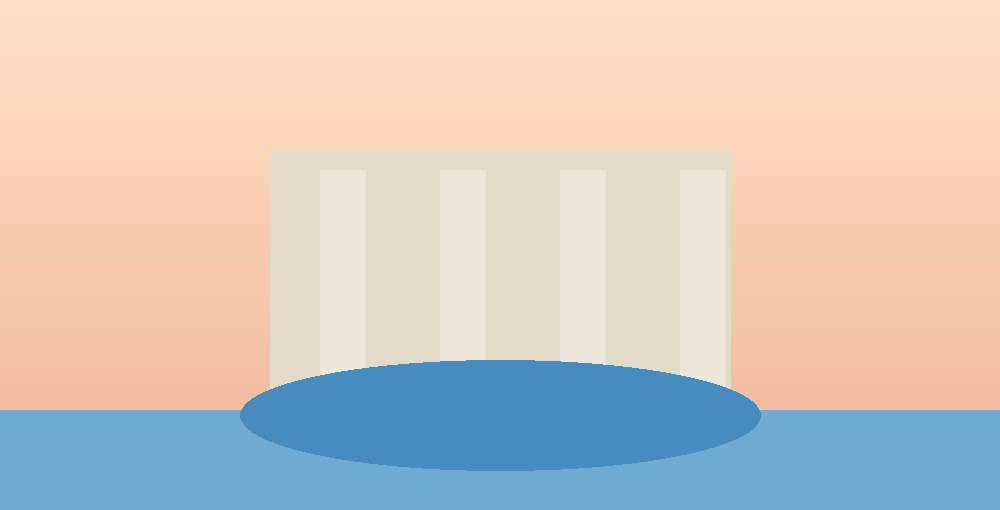
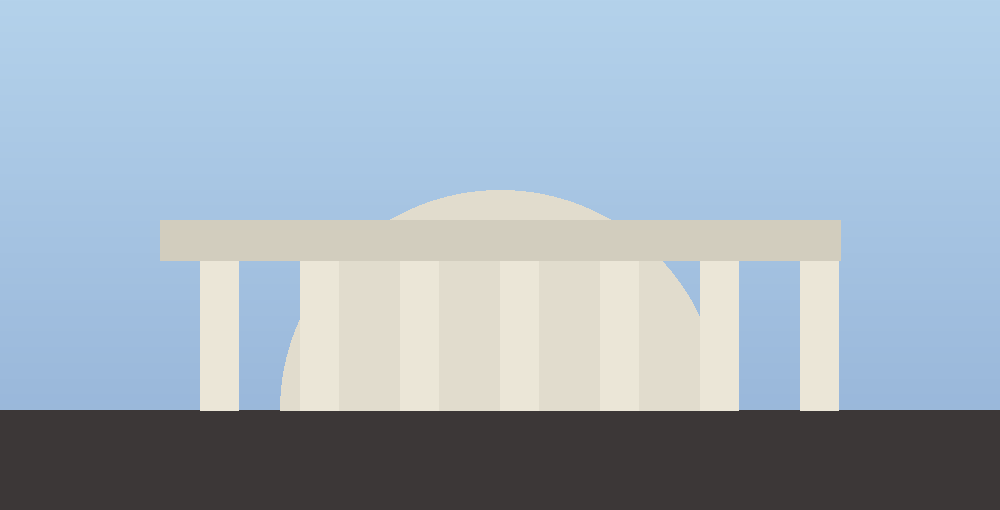
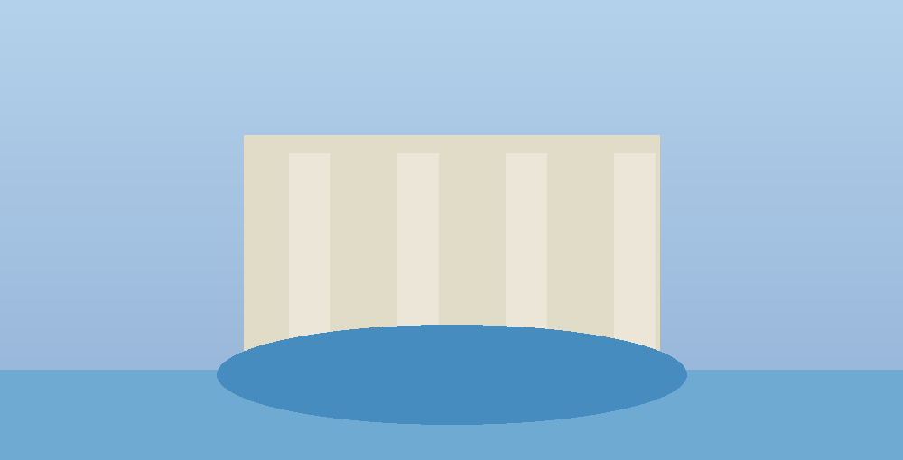
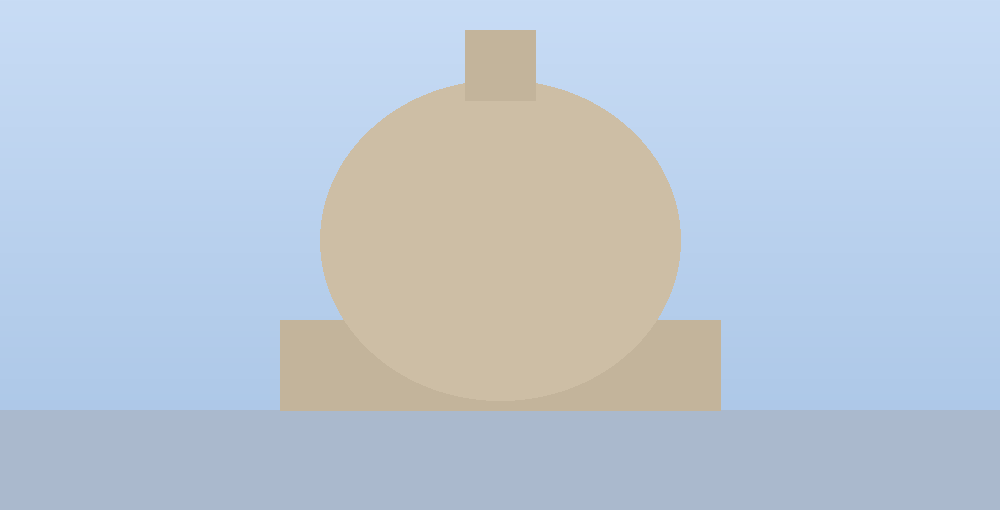
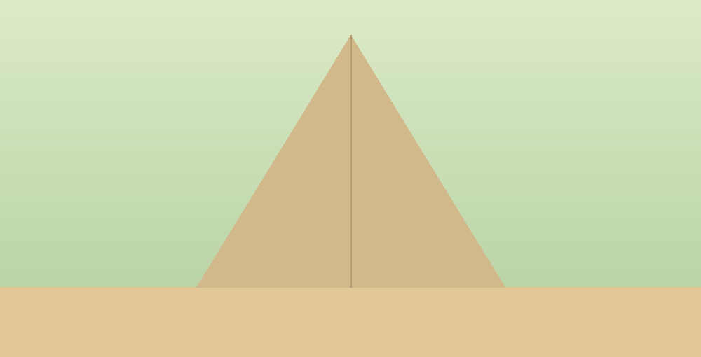
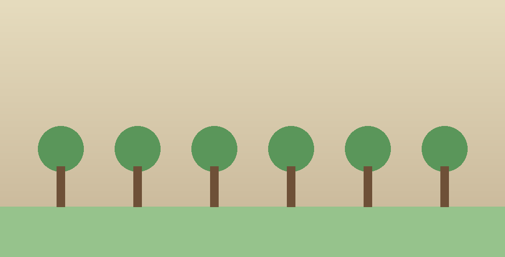

Colosseo, Foro Romano e Palatino
L'Arena dei gladiatori, il cuore politico dell'antica Roma e le residenze imperiali, in un solo percorso senza code.
Da€ 59
Richiedi info →
Tour guidati skip-the-line, esperienze su misura e il nostro itinerario self-guidato Aurora Roma Self: fotografi un monumento, ti raccontiamo la sua storia, in tempo reale, ovunque tu sia in città.

Accesso prioritario ai luoghi più richiesti, niente file sotto il sole.
Voucher, pagamenti, punto di ritrovo: rispondiamo subito, anche in viaggio.
Racconti curati, mai recitati: storia vera, aneddoti veri.
Con Aurora Self, il ritmo del tour lo decidi tu, monumento dopo monumento.
Dai grandi classici alle esperienze serali, ogni itinerario è guidato da chi Roma la vive ogni giorno.
L'Arena dei gladiatori, il cuore politico dell'antica Roma e le residenze imperiali, in un solo percorso senza code.

Cappella Sistina, capolavori senza tempo e la maestosità della più grande chiesa cristiana del mondo.

Pantheon, Piazza Navona e Fontana di Trevi: la Roma delle fontane monumentali, tra aneddoti e leggende.

Quattro tappe tra trattorie storiche e botteghe, nel quartiere più autentico di Roma.
Niente gruppi, niente orari fissi. Cammina per Roma al tuo ritmo: davanti a ogni monumento, scatta una foto e ricevi all'istante la sua storia, direttamente su WhatsApp.
Dopo l'acquisto, ricevi su WhatsApp un voucher digitale con un percorso suggerito, libero di seguirlo o di esplorare a modo tuo.
Davanti a un monumento, una fontana o una piazza, fotografala e inviala in chat ad Aurora, il nostro assistente virtuale.
In pochi secondi ricevi storia, curiosità e periodo storico del luogo, più un suggerimento per la tappa successiva.
Dal Colosseo ai vicoli di Trastevere, fino all'Appia Antica: l'archivio che alimenta il riconoscimento fotografico di Aurora Self.

PantheonFontana di Trevi
Piazza Navona
Castel Sant'Angelo
Piramide Cestia
Via Appia AnticaVoucher, pagamenti, cambio data: scrivici in chat o su WhatsApp, ti rispondiamo subito.